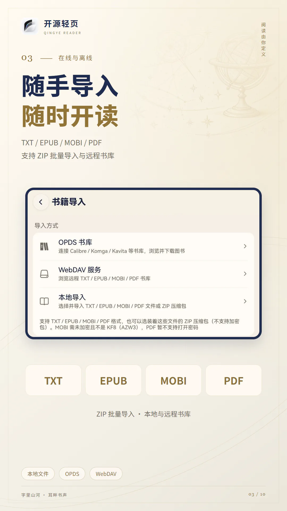
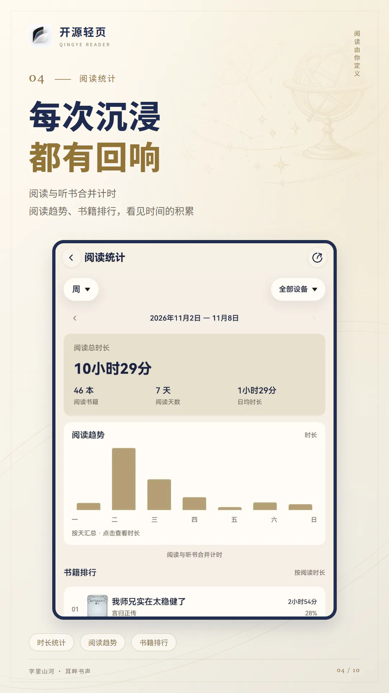
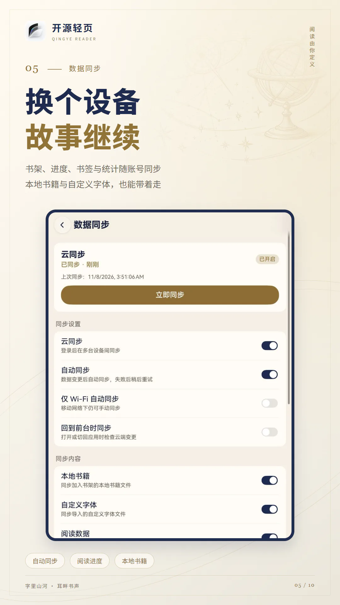
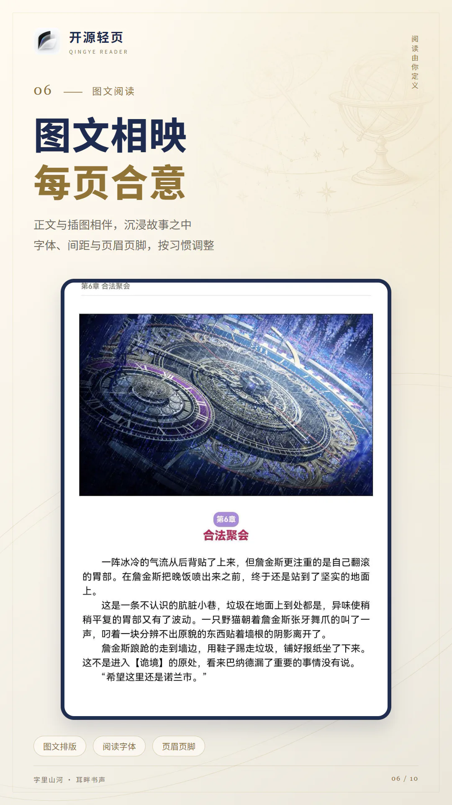
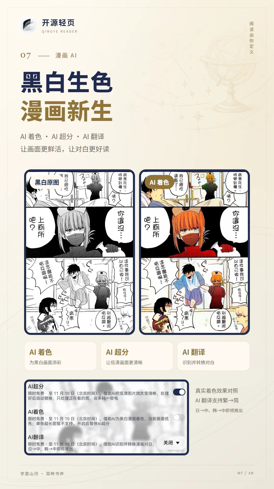
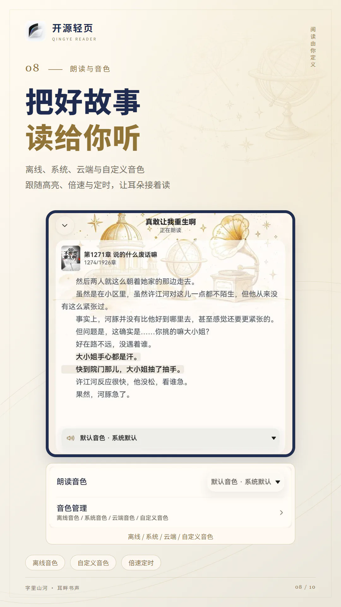
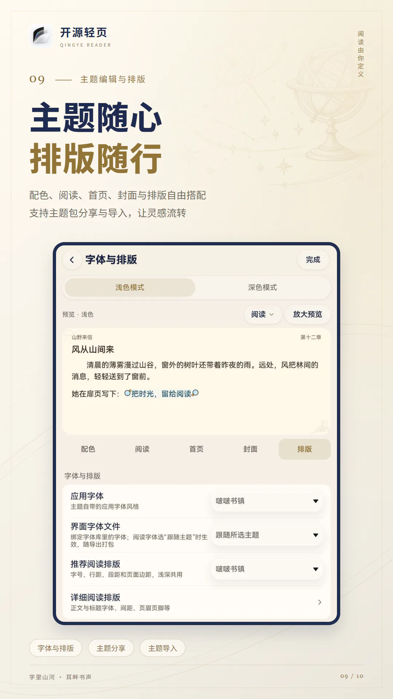
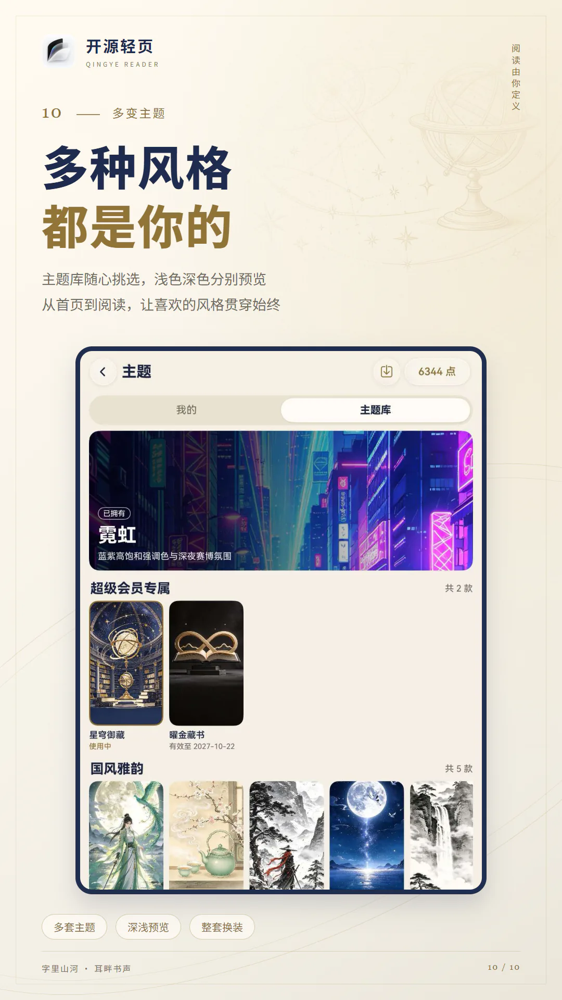

开源轻页使用说明书
一款 HarmonyOS 原生阅读应用：导入自己的 TXT、EPUB、MOBI 和 PDF，在手机、平板和电脑上读小说、看漫画、听朗读。








先了解：应用本身不带任何小说、漫画或音频。书架上的书都来自你自己导入的文件或自建书库。请只导入自有、已获授权或明确允许使用的内容。
快速上手
第一次打开时书架是空的。按下面的顺序走一遍，就能读到第一本书。
- 导入本地书打开 我的 › 书籍导入，点“本地导入”，在系统文件选择器里选 TXT、EPUB、MOBI、PDF 或装着它们的 ZIP，一次可以选多个。
- 在书架找到它导入完成后书会出现在书架上。书多了可以建分组、加标签，或用筛选和“搜索书架”快速找到。
- 开始阅读点书籍封面打开。阅读时点屏幕中央呼出菜单，可以看目录、加书签、朗读和切换日夜模式。
- 调成顺眼的样子菜单里点“Aa”调字号、行距、翻页方式、背景和字体；TXT 章节分得不对时在“更多操作 › 目录规则”里换一种分章方式。
- 备份与同步在 我的 › 数据同步 登录华为账号开启云同步，在另一台设备导入同一个文件后阅读进度会自动接上；想连书带笔记一起搬，就导出一份本地备份。
书放在电脑或 NAS 上？用 我的 › 书籍导入 里的 OPDS 书库或 WebDAV 服务直接浏览、下载，见书籍导入。
界面总览
所有功能都从底部页签进入，最常用的是这两个：
“我的”页有哪些入口
页面顶部是账号卡片（未登录时显示“登录华为账号”）和“数据同步”。下面的入口依次是：
| 入口 | 里面有什么 |
|---|---|
| 阅读统计 | 按日、周、月查看阅读时长和书籍排行。 |
| 书籍导入 | 本地导入、OPDS 书库、WebDAV 服务。 |
| 阅读与收听 | 小说、漫画、PDF、朗读各自的设置，以及点击区域、TXT 目录规则等阅读通用设置。 |
| 书架设置 | 布局与分类、卡片信息、封面图集、隐私书架。 |
| 主题 | 当前使用的主题、默认与自定义方案、已购主题和更多主题。 |
| 其他设置 | 数据导入导出、浏览器看书、全局字体、图标、沉浸光感。 |
| 帮助 | 应用内的使用说明，也就是本说明书，离线可看。 |
| 关于 | 项目说明、问题反馈、开源许可。 |
本说明书里写成 我的 › 某项 的地方，都是指从这里点进去。
播放胶囊
朗读时离开阅读页，首页会出现一个悬浮的播放胶囊，显示“朗读中”或“已暂停”和当前章节。点它可以展开控制面板，不用回到书里就能暂停、切章、定时或停止。
桌面卡片与快捷方式
- “最近阅读”服务卡片：添加到桌面后显示最近读的书，点“继续阅读”直接回到上次的位置，卡片上可以手动刷新。还没读过书时显示“暂无最近阅读”。
- “最近阅读”快捷方式：长按桌面图标出现，一步回到最近读的书。
- 隐私书架里的书不会出现在卡片和快捷方式里。
书籍导入
我的 › 书籍导入 支持 TXT、EPUB、未加密的 MOBI6 和 PDF，可从本地文件、OPDS 书库或 WebDAV 导入。
本地导入
- 点“本地导入”，在系统文件选择器里选文件，一次可以选多个。
- 等待导入，完成后提示“成功 N 本”，有失败的也会说明。
- 书出现在书架上，点封面就能读。
- 文件会复制到应用内部，之后移动或删除原文件都不影响阅读。
- 也可以直接选 ZIP 压缩包，包里的 TXT、EPUB、MOBI、PDF 会逐本导入，其他文件忽略。加密的压缩包和 RAR、7Z 不支持。再导入同一个包会更新已有的书，不会重复添加。
- 应用只读取你选中的文件，不会扫描公共目录。
- 想把文件拿回来，在书架长按书籍选“保存源文件”。
OPDS 书库
适合自己搭了 Calibre、Komga、Kavita、talebook 等书库的用户。应用不预置任何服务器。
添加书库
- 点右下角添加，填名称和服务器地址（必须以
http://或https://开头）。 - 书库需要账号时打开“需要登录”，填账号和密码。认证方式（Basic 或 Digest）由应用自动判断，不用自己选。
- “记住密码”会把密码存进系统密钥库；如果系统密钥库不可用，密码只在本次使用期间有效。
- 可以先点“测试连接”，成功会显示条目数。
- 地址不用写得很精确：填站点根地址，或末尾斜杠写得不对时，应用会自动换几种写法再试（包括补上
/opds），连上后把实际可用的地址存回配置。 - Kavita：Kavita 的 OPDS 地址里带一段密钥。可以直接填 Kavita 的网页地址，再打开“需要登录”填账号密码，应用会登录并自动取得 OPDS 地址；密钥失效时也会自动重新登录。只填网页地址而不填账号时，会提示你去 Kavita 里复制带密钥的 OPDS 地址。
- Calibre：内容服务器开了账号时直接填账号密码即可。
- 书库列表里显示的地址会遮住其中的密钥。账号密码只发给书库所在的主机。
书库列表里可以编辑、删除、启用或停用。删除只清除本机配置和保存的密码，不影响服务器上的书。
浏览和下载
- 逐级进入目录；上滑加载更多；书库支持时可以用搜索框按书名或作者搜索，以及用“筛选”。
- 点一本书看详情：作者、简介、出版社、系列、语言和文件大小。
- 立即阅读 / 在线预览：下载后直接打开，返回时询问是否加入书架。
- 加入书架：下载并作为本地书加入；已加入的可以“移出书架”。
- 下载时显示进度，可以取消；同一时间只能下载一本。
- 书库要求网页登录时，会出现“网页登录”按钮。
- 提示认证失败（401 / 403）时，回到书库列表检查账号和密码。
- 标着购买、借阅、订阅的条目应用不支持，需要到书库网页端操作。
WebDAV 服务
添加连接
填名称、服务器地址、书籍目录（留空表示 WebDAV 根目录）、用户名和密码。部分网盘要求使用“应用专用密码”而不是登录密码。认证方式（Basic 或 Digest）由应用自动判断；不需要账号的服务可以把用户名和密码留空。同样可以“记住密码”和“测试连接”。
浏览远端目录
| 操作 | 说明 |
|---|---|
| 上一级 / 进入文件夹 | 在目录间移动。列表显示文件夹和 TXT、EPUB、MOBI、PDF 文件。 |
| 刷新 | 重新读取当前目录。 |
| 新建 | 在当前目录创建文件夹。 |
| 上传 | 把本机的书上传到当前目录，可多选，显示逐个上传的进度和结果。 |
| 重命名 | 修改文件或文件夹名称。不能和已有的重名，不能包含路径分隔符。 |
| 删除 | 删除远端的文件或文件夹（连同里面的全部内容），无法撤销。 |
点一个书籍文件查看格式、大小和修改时间，然后选“立即阅读”“在线预览”或“加入书架”。
注意：WebDAV 里的重命名和删除是直接操作服务器上的文件，和“删除连接”不同。删除连接只清除本机配置。
书架
书架统一管理导入的小说、漫画和 PDF。书架为空时会提示你去导入。
顶部工具栏
| 位置 | 作用 |
|---|---|
| 布局切换 | 顶部布局图标，在紧凑、宽松、平铺、陪伴四种布局间切换。默认是陪伴布局，从旧版本升级后也会改为陪伴一次，之后可随时换回。 |
| 类型分类 | 全部、小说、漫画等，只显示当前有书的类型。 |
| 筛选 | 漏斗按钮，按阅读进度、最近阅读或标签组合筛选，也可打开“搜索书架”。 |
| 排序 | 新阅读（最近读的在前）、新加入（最近加入的在前）、名称。 |
| 标题 / 分组 | 点标题下拉切换全部、未分组或自建分组，并管理分组；旁边显示书籍数量。陪伴布局不显示标题，改为点右上角第一个文件夹图标切换分组。 |
筛选与搜索书架
点右上角筛选按钮，各组可多选，再点一次取消。不同组的条件要同时满足，同组只要满足其中一个。例如“在读 + 一月内”只看最近一个月读过、还没读完的书；标签同时选两个，则显示包含任意一个标签的书。
| 筛选组 | 可选内容 |
|---|---|
| 阅读进度 | 未读、在读、已读完。“已读完”指已读到目录末尾。 |
| 最近阅读 | 一周内、一月内、三个月没读。未打开过的书按加入书架的时间判断是否长期没读。 |
| 标签 | 点进二级列表选择，选项随当前书架变化并显示本数，包含自定义标签。 |
菜单里的“搜索书架”会展开输入框，按书名、作者或标签过滤书架上的书。它可与分组、类型和筛选一起使用；点“取消”清空关键词并收起输入框，点“清除筛选”移除筛选条件。没有结果时先检查是否叠加了过多条件。
书籍卡片上的信息
- 上次阅读：最近读的那本书排在最前，封面右侧有一张“扉页”，可以显示书籍信息或上次读到的正文片段（在书架设置里选）。
- 阅读进度：显示“已读 27.3%”这样的百分比、未读章数（如“12 章未读”）或“已读完”。
- 类型标识：封面上的“书／漫”等字样，表示普通书或漫画，可在封面标识设置中调整位置或隐藏。
- 置顶标记：置顶的书固定在最前面。
- 平铺布局下，分组会显示成一个文件夹，下面写着“共 N 本”。
长按书籍能做什么
| 操作 | 说明 |
|---|---|
| 查看书籍详情 | 看简介和完整目录。 |
| 置顶 / 取消置顶 | 把常看的书固定在最前面。 |
| 单独设置封面 · 上传本地图片 | 从手机文件里选一张图片作为这本书的封面，优先于文件自带的封面显示。 |
| 恢复默认封面 | 撤销单独设置的封面。 |
| 编辑书籍信息 | 修改书名和作者（作者可留空，书名不能为空）。 |
| 自定义标签 | 给书加上自己的标签，可加多个，点“×”删除。 |
| 移动分组 | 把书放进某个分组，没有合适的分组时可以当场新增。 |
| 标记为隐私 / 取消隐私 | 移入或移出隐私书架。 |
| 保存源文件 | 把导入的 TXT、EPUB、MOBI、PDF 原文件另存到你选的位置。 |
| 多选 | 进入批量模式。 |
| 移出书架 | 删除这本书，会先弹出确认。 |
多选批量操作
长按选“多选”后，书籍前出现勾选框，顶部显示“已选择 3/19”。可以全选或取消全选，然后：
- 删除：把选中的书一起移出书架。
- 分组：一起移动到某个分组。
- 更多：批量标记为隐私或取消隐私；批量保存源文件。
分组
- 分组名称不能重复。
- 删除分组后，里面的书回到“未分组”，书本身不会被删除。
- “全部”和“未分组”是固定的，不能改名或删除。
隐私书架
- 到 我的 › 书架设置 › 隐私书架 打开开关，之后双击书架顶部空白处即可进入隐私书架，在隐私书架里再双击回到原来的分类。
- （可选）在“隐私书架密码”里设置密码，之后进入隐私书架要先输入。新密码留空保存即可清除密码。
- （可选）设了密码后可打开“指纹或人脸解锁”，进入时先用系统指纹或人脸验证（部分机型也可改用锁屏密码）；验证没通过、关掉验证框或点了“使用密码”，再改输隐私书架密码。需要先在系统设置里录入指纹或人脸。
- 回到书架，长按想隐藏的书，选“标记为隐私”。
- 隐私书籍不会出现在普通书架、桌面卡片、最近阅读快捷方式和浏览器看书里。
- 隐私书籍的阅读时长照常记录，但不在阅读统计里显示；取消隐私后恢复显示。
- 关闭隐私书架开关后，隐私书籍继续隐藏，并不会回到普通书架；设了密码的话，关闭前要先验证密码。
忘记密码：只能用“重置隐私书架”。它会删除所有隐私书籍及其进度、书签，并关闭隐私书架，无法撤销。
书架设置与封面
入口：我的 › 书架设置。
布局与分类
| 设置项 | 作用 |
|---|---|
| 书架布局 | 紧凑、宽松（列表，信息密度不同）、平铺（封面网格），或陪伴（平铺网格上方加问候语、继续阅读轮播与今日阅读时长、近 7 天柱条和连续阅读天数的阅读小记，点小记进入阅读统计）。 |
| 上次阅读置顶 | 平铺布局下最近读的书排在最前的样式：不置顶、展开书本（跨两列）或继续阅读卡片（占满一行）。 |
| 置顶数量 | 选继续阅读卡片时，按最近阅读最多展示几本。 |
| 错落摆放 | 陪伴布局下网格里的书高矮不一、少数斜靠，分组书扇形张开；关闭后单本书与分组书一样大、全部立正，分组改为三本叠放。默认打开。 |
| 问候语 | 陪伴布局左上角的两行文案：按时段（内置）、自定义或不显示。自定义时可插入问候、昵称、今日阅读、在读、日期，显示时换成实时内容；也可在书架上长按问候语直接修改，“恢复默认”回到按时段。 |
| 上次阅读扉页设置 | 选展开书本时，封面右侧显示什么：书籍信息、内容预览（上次读到的正文），或自适应。 |
| 书籍分类 | 默认开启，书架顶部按全部、小说、漫画等类型分页。关闭后没有分类栏和右上角的展开/收起按钮，所有书平铺在一页。 |
| 显示全部分类 | 开启书籍分类后可设置，默认开启。关闭后分类栏不再有“全部”，只列有书的类型。 |
| 书籍打开动画 | 点击书籍时显示封面展开动画。 |
卡片信息
| 设置项 | 作用 |
|---|---|
| 书籍标签 | 书架卡片是否显示标签。 |
| 书籍简介 | 显示书籍文件自带的简介。 |
| 显示全部简介 | 卡片上显示完整简介，不截断。 |
| 使用阅读进度条 | 卡片底部显示阅读百分比和阅读信息。 |
| 显示最后阅读时间 | 进度条旁显示最近一次阅读的时间（如“今天 21:30”）。 |
| 显示最后阅读章节 | 进度条旁显示最近读到的章节。 |
| 封面标识 | 分别配置封面四个角的类型、来源、更新、置顶和未读章节数，每角最多两项；支持预览、跨角移动、清空及恢复默认，点击“完成”保存。更新与未读数在同一角时组合展示，未读为 0 或目录未知时隐藏，超过 99 显示“99+”。 |
封面
封面图集是一组你自己准备的图片，用来给书架上的书统一换封面。
| 设置项 | 作用 |
|---|---|
| 图集管理 | 新建图集、导入图片、重命名和预览，见下方。 |
| 浅色配色图集 | 浅色模式下用哪个图集，也可以选“不使用图集”。 |
| 深色配色图集 | 深色模式下用哪个图集。 |
| 图集应用范围 | 全部应用，或只对“指定书籍”生效（从列表里勾选）。 |
| 封面模式 | 图集里有多张图时，按顺序分配还是随机分配。 |
| 忽略原始封面 | 打开后书架只用图集里的封面，不再显示文件自带的封面。 |
| 仅忽略空封面 | 打开“忽略原始封面”后出现，默认关闭。打开后书自带封面时照常显示，只有没有封面的书才用图集。 |
图集管理
在“封面 › 图集管理”里：
- 新建图集：输入名称创建。页面顶部显示图集数量、图片总数和当前图集。
- 上传图片：从相册选多张图片加入当前图集。
- 上传 ZIP：选一个压缩包，里面的图片会全部导入。
- 导出 ZIP：把当前图集打包保存，方便分享或备份。
- 管理图片：进入选择模式，全选或逐张勾选后“删除所选”。
- 重命名图集 / 删除图集。
主题也可以自带封面。在应用主题时打开“应用主题封面”，书架会使用主题封面和配套的书籍边框，见主题与外观。
阅读
点击区域与菜单
屏幕分成九宫格，每格可以设一个动作。默认是点正中呼出菜单，上方和中左翻上一页，中右和下方翻下一页。想改就去 阅读设置 › 点击区域动作 › 配置，点格子在“无动作、菜单、下一页、上一页”之间循环切换，点“重置默认”恢复。
菜单顶部：
| 按钮 | 作用 |
|---|---|
| 返回 | 退出阅读，进度自动保存。 |
| 更多操作 | 见下表。 |
菜单底部依次是：目录、排版设置（Aa）、朗读、日夜模式、书签。
“更多操作”里的项目（按书籍类型和状态显示）：
| 项目 | 作用 |
|---|---|
| 阅读设置 | 打开排版设置面板。 |
| 朗读设置 | 打开朗读倍速、音色和定时。 |
| 正文查找 | 在全书正文里查找文字，见下方“正文查找”。 |
| 字符编码 | 仅 TXT：重新选择文件编码。 |
| 目录规则 | 仅 TXT：换一种分章方式，见下方“本地书”。 |
| 切换为漫画阅读 / 普通阅读 | 手动切换阅读方式。 |
| 使用文件排版 | 仅 EPUB：按书里原本的样式显示，见下方“本地书”。 |
| 布局元素设置 | 开关菜单上的快捷组件。 |
| 替换净化配置 | 管理替换规则。 |
布局元素设置
控制呼出菜单时一起出现的快捷组件：
- 使用快速朗读组件：显示朗读快捷按钮和朗读悬浮胶囊。
- 使用快速跳转组件：小说可在“章节 / 百分比”之间切换并记住上次选择，左右按钮始终为上一章、下一章。拖动时上方胶囊显示目标位置，松手直接跳转；胶囊右侧的撤销键可回到第一次跳走前的位置，关闭菜单后撤销失效。全书百分比按章节等权、章内页进度计算，与阅读信息栏一致；选择 0% 回到书首，实际显示值以落地页为准。漫画可在“话数 / 百分比”之间切换：话数定位到该话开头，百分比按各话等权、话内图片页进度定位，左右按钮始终为上一话、下一话。双页模式定位到包含目标页的一组页面，显示实际落地进度；加载失败保留原位置。
正文查找
阅读菜单“更多操作 › 正文查找”可以搜索全书正文，查找时不联网：
- 输入文字后点“查找”，从第一章起逐章查找，结果边查边列出，每条显示所在章节和前后文；查找中可以点“停止”。不区分大小写，查的是经过替换净化后的正文，与屏幕上看到的一致。
- 结果按章分组。点一条结果跳到原文所在的页，命中的文字以黄色高亮。页底出现查找胶囊：上下箭头切换上一处、下一处（可以跨章），点中间的“第几处”重新打开结果列表，旁边的“×”结束查找。想回到开始查找前读到的地方，点结果列表上方的“回到原位置”。
- TXT、EPUB、MOBI 都查全书。
- 结果超过 1000 处时只列出前 1000 处，可以换更精确的关键字。关闭面板后结果仍保留，再次打开可以接着看。
- 漫画不支持正文查找；PDF 在自己的阅读菜单里查找；EPUB 使用文件排版时暂不支持正文查找。
目录
- 顶部显示书名、作者和“共 N 章”。
- 搜索目录：输入章节名称，显示“找到 N 章”。
- 跳到指定章节：点章节序号位置输入目标章节的序号，按回车定位。
- 回到当前章节：点一下定位到正在读的章节。
- 正序 / 倒序：切换目录排列方向。
- 目录规则：TXT 的目录页上有尺子按钮，章节分得不对时点它换规则；章节明显过短时目录顶部也会提示。
- 右侧滚动条可以拖动快速定位。目录面板另有“书签”和“笔记”页签。
划线与笔记
- 长按正文选中一段文字，在弹出的菜单里点“划线”，或点“笔记”划线并写下想法。和已有划线重叠时会合并成一条。
- 划线样式有下划线、波浪线、背景色和字体色，颜色可以自己选。
- 点已有的划线，可以擦除、复制、分享、编辑笔记或进入配置。
- 目录面板的“笔记”页签列出全书的划线和笔记，点一条跳到原文。
- EPUB 的应用排版和文件排版共用同一份划线。划线和笔记会写进本地备份。
书签
- 添加：点菜单底栏最右侧的按钮，把当前位置存为书签；再点一次删除。
- 下拉添加：打开“快速添加书签”后，在正文下拉到提示“松开添加书签”再松手；当前页已有书签时变成“松开删除书签”。
- 查看：目录面板切到“书签”页，每条显示章节、页码和一段正文。点书签跳过去。
- 删除：左滑单条删除，或“多选”后全选批量删除。
翻页与操作
这些设置在阅读菜单的排版设置里，也在 我的 › 阅读与收听 › 小说。
| 设置 | 说明 |
|---|---|
| 翻页方式 | 上下滑动（上下滑一下翻一页）、横向滑动（左右翻页）、滚动阅读（像网页一样连续滚动）。 |
| 翻页动画 | 无动画、平移、淡入、叠页、仿真、3D仿真。仿真类只在横向滑动时可用。3D仿真下从页面的上角或下角拖动，纸角会跟着手指移动，松手后顺势翻过去或弹回原位。 |
| 使用双翻页 | 横屏或折叠屏展开等宽屏状态下同时显示左右两页。 |
| 屏幕方向 | 跟随系统、强制竖屏、强制横屏。 |
| 音量键翻页 | 音量上键上一页，音量下键下一页。 |
| 快速添加书签 | 正文下拉时添加或删除当前页书签。 |
| 眼动翻页（beta） | 用视线翻页，见下文。 |
| 亮屏时间设置 | 用加减按钮在 0～60 分钟之间调整，点中间的数值可直接输入；0 为常亮。无操作达到时长后恢复系统息屏。 |
| 点击区域动作 | 九宫格点击动作，见上文。 |
滚动阅读时，在章节开头继续下拉会“加载上一章”，在章节结尾继续上滑会“加载下一章”。读到最后一章末尾会提示“本书已阅读完成”。
日间、夜间与自动
菜单底栏的日夜按钮在日间模式、夜间模式和自动模式之间切换。自动模式跟随系统的深浅色。
漫画
以图片为主的书（例如漫画 EPUB）会自动用漫画方式打开，识别不对时在“更多操作”里手动切换漫画阅读或普通阅读。漫画设置在阅读菜单的设置入口中，可调整阅读方式和画面。图片逐张加载并显示，优先处理屏幕上的图片；单张失败时可长按重新加载。
- AI超分（会员专享）：API 26 起且系统支持时，在设备本地提升漫画显示清晰度，长图分块处理；每块结果都与原图逐块核对，个别对不上的小块改用普通放大，失败时继续显示原图。屏幕附近的相邻页会提前处理，翻到时多半已完成；处理较久时阅读页右下角显示“AI 超分处理中…”，AI 着色和 AI翻译处理时也有同样的提示。
- 查看本页文字：长按漫画图片，选择“查看本页文字”，可识别、复制原文、取消或重新识别。识别在本机进行，需要设备支持系统文字识别能力。
- AI翻译（会员专享）：在漫画“画面设置”中下拉选择“关闭”或“繁→简”，按书保存，默认关闭；“日→中”和“韩→中”标记为即将推出，暂不可选。屏幕上的图片识别后，在纯色气泡中按原方向和颜色覆盖简体文字；复杂背景、艺术字和无法可靠识别的区域保留原样。关闭后恢复原图，也可与超分一起使用。
- 默认值：AI 着色和 AI翻译都按书保存。在 我的 › 阅读与收听 › 漫画 里可以设置默认值，没单独设置过的书跟随默认值；在阅读页给某本书单独开关过的，以那本书为准。默认着色首次开启时需要下载着色模型。
- 文字页的“繁→简”预览同样需要会员。日文、英文、韩文目前仅支持文字识别，尚不提供中文翻译。识别与转换可能有误，可对照原图阅读。
- 漫画使用专用阅读界面，可选条漫或横向翻页（从左往右、从右往左），阅读方式按书保存。在阅读页「阅读方式」或「我的 › 阅读与收听 › 漫画」中开启「使用双翻页」后，阅读区域宽度大于高度时并排显示两页；关闭后每次显示一页。此开关仅影响漫画，条漫模式不生效。
- 条漫可以连续滚过相邻章节。画面设置可调背景、页间距、适应宽度或屏幕、信息条；支持双击和双指缩放。
- 长按图片可保存、分享或重新加载。
本地书：EPUB、MOBI 与 TXT
EPUB 与 MOBI
- 应用排版（默认）：按你的字号、行距、背景和字体重新排版。图文混排，小图跟随文字显示，大图单独占一页（页码显示为“图片页”）；插图解码后复用，减少翻页和跨章时的闪白。
- 文件排版：EPUB 在“更多操作 › 使用文件排版”里切换，按书里原本的样式、字体和版面显示，适合排版讲究的书。可以翻页或滚动，支持目录、书签、划线和朗读；在它的“更多操作 › 使用应用排版”改回来。两种排版共用阅读进度。
- 注释：书里的注释链接点一下会弹出注释内容，不用跳走。
- MOBI：支持未加密的 MOBI6，按 EPUB 的方式阅读。
TXT
- 字符编码：打开是乱码时，在“更多操作 › 字符编码”里改。默认“自动识别”，可手动选简体中文、繁体中文、Unicode（含带 BOM、小端序、大端序）、日语、韩语、俄语、西里尔字符、中欧语言等，点“应用”后重新解析。
- 目录规则：TXT 没有自带目录，应用按规则找出章节标题。默认“智能识别”，内置的还有只认“第…章”、数字序号、英文 Chapter、符号包裹、顶格短行和按字数分章。在目录面板的尺子按钮或“更多操作 › 目录规则”里为这本书换规则，换之前会先预览分章结果，阅读位置按全书字数换算保留。
- 自定义规则：我的 › 阅读与收听 › 小说 › TXT 目录规则 里可以开关内置规则、新建自己的正则规则（可以逐行试匹配，也能用当前书全文试分章）、设置新导入 TXT 的默认规则，以及导入导出。
提示“文件可能已被移动、删除或尚未重新导入”时，需要重新导入这本书。
眼动翻页（beta）
- 在阅读设置里打开“眼动翻页（beta）”，按提示授予相机权限。
- 打开任意一本书，在正文的阅读设置里点“眼动校准”。
- 按提示做三步校准：头和手机保持不动，只用眼睛看目标点，每一步看准后点“开始采样”并保持视线。竖屏和横屏分别校准。部分设备支持自动校准，会显示“AR 自动校准 · 无需手动校准”。
- 阅读时，视线到达正文底部会提示“向上看，翻下一页”，向上看一下就翻页。
相机画面只在本机处理，不上传也不保存。不授权相机就无法使用这个功能，其他功能不受影响。
打开出问题时怎么办
| 情况 | 处理办法 |
|---|---|
| TXT 满屏乱码 | “更多操作 › 字符编码”，换成对应的编码。 |
| TXT 章节太少、太碎或整本只有一章 | “更多操作 › 目录规则”换一种规则，实在没有章节标题就选按字数分章。 |
| EPUB 样式和原书差别大 | “更多操作 › 使用文件排版”。 |
| 提示文件已被移动或删除 | 重新导入这本书，进度会自动对上。 |
| 导入失败或提示格式不支持 | 见常见问题。 |
PDF 原版式阅读
从书架打开 PDF 后，页面会保留原始版式、图片、表格和页面颜色。扫描件也可以直接阅读。
- 在“我的 › 阅读与收听 › PDF”中调整连续滚动、宽屏双页、适配整页和 AI 超分的默认值；单本 PDF 在阅读页里单独调整过的选项优先。用双指缩放；关闭适配整页后按宽度显示，窄窗口自动使用单页。
- 阅读时隐藏状态栏，点按正文唤出或收起阅读菜单和状态栏。“目录”显示 PDF 内嵌目录并定位到当前章节；没有目录时按页列出。底部浮层可拖动进度条或点左右箭头翻页；点“跳转页码”图标、顶部书名或进度条上方的小横条，可输入指定页码。
- 点右上角“搜索”查找文档的文字层，可以切换命中结果，搜索时仍可滑动正文查看；扫描件没有文字层时可能没有结果，不会自动做 OCR。
- “阅读设置 › AI超分”可增强符合条件的低清扫描页，默认关闭并按书保存，沿用漫画超分的设备及会员／试用条件。开启后点按正文唤出菜单，可用“查看原页／查看超分”对比；AI 可能改变细小文字或数字。文字、混合、旋转、复杂裁切和已足够清晰的页面继续原生显示；增强失败时保留原页，搜索及滚动缩放期间也会临时使用原页。
- 阅读进度以 PDF 的物理页保存，重新打开恢复到上次阅读页。同一 PDF 文件可沿用现有进度同步；印刷页码可能与物理页不同。
- 暂不支持需要打开密码的 PDF、文字重排、朗读、全文 AI、编辑批注及自定义 PDF 书签。应用主题只调整工具栏和背景。
排版、字体与配色
在阅读菜单点“Aa”，或到 我的 › 阅读与收听 › 小说。阅读设置页顶部有一段预览文字，改动会立刻反映在上面。
排版参数
选中一项后用“−”“＋”调整：字号、字距、行距、段落间距、左边距、右边距、上边距、下边距。
| 设置 | 说明 |
|---|---|
| 正文对齐方式 | 两端对齐、左对齐、右对齐。 |
| 正文扩展至状态栏 | 隐藏状态栏，正文延伸到屏幕顶部。 |
| 段首缩进 | 可选 0–4 字符，默认 2 字符。章节开头和页首的段落首行使用所选缩进，跨页续行不额外缩进。 |
| App 配色 | 跟随系统、浅色、深色。 |
页眉和页脚
先打开“显示页眉”“显示页脚”，然后分别设置左侧、中间、右侧三个位置显示什么：
- 不显示
- 书名、作者
- 章节标题、章节序号 + 标题、书名 + 章节标题
- 当前页 / 总页数、本章剩余页数
- 本章百分比、章节进度、全书百分比、当前页 / 总页数 + 全书百分比
- 时间、电量、时间 + 电量
| 设置 | 说明 |
|---|---|
| 页眉分隔线 / 页脚分隔线 | 在页眉下方或页脚上方画一条细线。 |
| 页眉位置 / 页脚位置 | 范围 -350 到 350，每次调 2。正数让页眉向下、页脚向上移动；负数朝屏幕边缘移动，最多紧贴边缘。正文会跟着让出位置。 |
| 页眉收缩 / 页脚收缩 | 分别调整页眉、页脚的左右边距。默认 0，范围 -350 到 350，每次调 1；正数向内收，负数向外扩。叠加在固定边距或跟随正文的边距上，向外最多到屏幕边缘，向内保留文字显示空间。 |
| 页眉颜色 / 页脚颜色 | 点击后分别设置文字颜色，可使用调色盘、预置颜色或输入六位十六进制色值。默认跟随阅读主题，在选色面板点击“跟随主题”可恢复默认。文字仍受各自不透明度设置影响。 |
| 页眉字号 / 页脚字号 | 分别调整页眉和页脚的文字大小，范围 10 到 40，每次调 1。 |
| 页眉不透明度 / 页脚不透明度 | 分别调整页眉和页脚文字的深浅，范围 30% 到 100%，每次调 10 个百分点。 |
| 边距跟随正文 | 页眉页脚的左右边距和正文保持一致。 |
| 进度条 | 不显示、页眉下方或页脚上方。 |
| 进度条范围 | 表示本章进度还是全书进度。 |
阅读字体
阅读设置 › 阅读字体 顶部可以在四个分段之间切换：
- 自定义字体：列出已上传的字体（用字体本身显示名字，正文或标题在用的会标出来），点“上传 / 管理”上传或删除，见下。
- 正文字体设置：字体类型选“跟随全局字体”“系统字体”或某个自定义字体，并调整字体大小。
- 标题字体设置：章节标题单独设字体和大小。
- 正则字体设置：让匹配到的文字用不同的样式显示，见下。
正则字体（强调样式）
打开“启用正则字体”，点“添加规则”下的预设会直接进入新建规则页：
- 对话：自动匹配“ ”、「 」、『 』和英文引号里的内容。
- 关键字匹配：填一个关键词，凡出现处都强调。
- 空白规则：自己写正则表达式。
点列表里的规则进入编辑页，可以设置规则名称、正则表达式、字体和字号，以及：
- 强调效果：跟随主题、无强调、柔和、实色、圆角胶囊、纸笺、霓虹，或自定义。
- 气泡风格：经典玻璃、暖纸卷轴、林间露珠、水墨笔触、霓虹脉冲、草莓软框、赤墨印章、青瓷纸笺、玫瑰信框、月光描边、剑符、青鸾玉令、皮皮软爪。
- 颜色：文字颜色、高亮色块颜色、强调气泡颜色。
正则表达式写错时会提示“正则表达式无效”，编辑页下方的预览会显示命中效果。改完点右上角“保存”回到列表；不保存直接返回时会问“是否保存？”。编辑页底部可以删除规则。
自定义字体
阅读字体 › 自定义字体 › 上传 / 管理 点“上传字体”，支持 ttf、otf、ttc。上传后会出现在阅读字体和全局字体的选择列表里；不用的可以在这里删除。
阅读背景
背景分浅色和深色两组，各自保存。背景设置里的“自”是你自己建的方案，“主”是当前主题自带的背景。
- 新增 / 删除方案：可以建多套并命名；至少要保留一套。
- 背景色：用取色器选颜色。
- 背景图片：从相册选图，填充方式有裁剪填充、完整显示、拉伸铺满；可以更换或移除图片。
- 文字颜色：正文的颜色。
替换净化
替换净化是什么
用来去掉正文里的水印、广告语、错别字或多余符号。每条规则把“匹配到的内容”替换成“另一段内容”，留空就是删除。入口：阅读设置 › 替换净化，或阅读菜单“更多操作 › 替换净化配置”。
新建规则
点右下角“+”选“新建规则”：
| 字段 | 说明 |
|---|---|
| 规则名称 | 给自己看的名字，例如“去除章节末广告”。 |
| 匹配规则 | 要查找的文本或正则表达式。必填。 |
| 替换为 | 替换成什么；留空表示删除匹配内容。 |
| 使用正则 | 打开后“匹配规则”按正则表达式处理，否则按普通文本。 |
| 标题 / 正文 | 规则作用于章节标题、正文，或两者。至少选一个。 |
| 特定范围 | 只对某些书生效：填书名或作者；留空表示全部。 |
| 排除范围 | 不对哪些书生效。多个范围用逗号或换行分隔。 |
| 超时 (ms) | 这条规则最多运行多久。 |
导入、导出与管理
- 从 URL 导入 / 从文件导入：兼容 Android 阅读和 YueDu 导出的规则（文件最大 5MB）。Android 的正则写法会自动转换，转换过的规则下面会注明。
- 搜索：按规则名称或匹配内容查找。
- 启用 / 禁用：每条规则可单独开关。
- 多选：批量启用、禁用、删除，或“导出 JSON”。
当前章节生效检查
从阅读页进入替换净化时，顶部会显示“当前章节生效检查”：有几条规则在本章生效，并可以对比“替换前”和“替换后”的内容。每条规则下方也有它在本章的检查状态。用它确认新规则是否起作用。
为防止写错的正则卡死阅读，单条规则最多运行 3 秒、整章最多 8 秒；超时的规则会被跳过，原文保持不变。
朗读
开始朗读
在阅读菜单点朗读按钮，从当前页开始连续朗读，读完一章自动进入下一章。
- 正在读的句子会高亮；翻页模式自动翻页，滚动模式画面自动跟随。
- 再点一次暂停，之后“继续朗读”。
- 退出阅读页或切到后台后朗读不会停，用首页的播放胶囊、通知栏或锁屏的媒体控制继续操作。
朗读控制面板
| 控件 | 作用 |
|---|---|
| 播放 / 暂停 | 暂停或继续。 |
| 上一章 / 下一章 | 切换章节朗读。 |
| 定时 | 15、30、60、90、120 分钟后自动停止。设好后显示剩余分钟数，再点同一项取消。 |
| 倍速 | 加快或放慢语速。 |
| 选择音色 | 在离线音色、云端音色、自定义音色、系统音色几个分类里选。 |
| 目录 | 跳到其他章节朗读。 |
| 停止朗读 | 结束朗读并关闭面板。 |
朗读设置
我的 › 阅读与收听 › 朗读：选择默认的朗读音色、调整朗读倍速，点“试听”用一段示例文字听效果。
系统音色
使用系统自带的朗读引擎，免费、可离线。部分音色需要先点“下载”，下载完成后自动启用。显示“当前不可用”的音色是系统暂不支持的。
离线音色
会员专享的神经网络音色，在手机上本地合成，不联网、不限字数。入口：朗读设置 › 音色管理 › 离线音色，点“下载”（约 63MB，建议连 Wi-Fi），下载完成后自动启用。
- 下载可以随时取消；离开音色管理页也会在后台继续。
- 开始朗读时会加载模型，第一句稍慢；停止朗读一会儿后自动释放内存。
- 已下载的音色可以左滑启用、禁用或删除；删除后需要重新下载才能使用。
- 导入模型：在离线音色列表底部点“导入模型”，选择 sherpa-onnx 语音合成模型的 zip 压缩包（支持 VITS、Piper、Matcha、Kokoro）。官方提供的 .tar.bz2 需要先在电脑上解压，再把模型文件夹打成 zip。包里要有 .onnx 模型和 tokens.txt，以及 lexicon.txt 或 espeak-ng-data 目录；Matcha 模型要把声码器（如 vocos-22khz-univ.onnx）一起放进去。
- 导入的模型由你自行确认版权与用途。不兼容的模型可能在第一次朗读时让应用退出，重新打开后会自动停用它，可以左滑删除。
自定义音色
接入你自己的 HTTP 朗读服务。入口：朗读设置 › 自定义音色 › 管理，点右下角“+”：
- 从 URL 导入 / 从文件导入：导入原版 HttpTTS 的 JSON（文件最大 2MB）。
- 手动新建：填写名称和请求 URL（必填），以及可选的请求头、内容类型（如
audio/.*）、并发率、登录URL、登录UI、登录检查JS、JS库、JS引擎，和“启用 CookieJar”开关。
管理页可以搜索音色、编辑、启用或禁用、删除，以及多选后批量操作。被禁用的音色不会出现在朗读时的可选列表里。
云端音色
应用提供的在线音色，分标准音色和精品音色，需要登录华为账号，按朗读的字数消耗“在线朗读字数”。
- 在朗读设置的“在线朗读字数”里查看当前额度，点“刷新”同步。
- 用点数兑换字数包，每个字数包标明字数、所需点数和有效天数。只能用充值点兑换，赠送点不能兑换字数包。
- 计费方式：标准音色每次按 100 字向上取整，精品音色按 50 字向上取整。
- 同一音色、同一段文字、同一倍速再次播放时优先用本地缓存，不重复扣字数。
浏览器看书
把手机变成一个小型网站，让同一个 Wi-Fi 下的电脑或平板用浏览器看你书架上的书。
开启
- 打开 我的 › 其他设置 › 浏览器看书 的开关，状态变为“运行中”。
- 开关下方显示访问地址，点旁边的复制按钮复制。
- 在同一局域网的另一台设备上，用浏览器打开这个地址。
浏览器里可以看书架，阅读小说和漫画；章节进度会和应用同步。
访问密码
- 没设密码：访问地址里带一段令牌，局域网内拿到完整地址的人就能进入。
- 设了密码（最多 64 个字符）：地址不再需要带令牌，打开后输入密码进入。密码加密保存在本机。
- 连续输错密码会被暂时锁定，从 30 秒起，错得越多锁得越久，最长 10 分钟。
- 如果提示“已保存的密码无法读取，浏览器访问已锁定”，重新设置一次密码即可。
限制
- 关闭开关后，原来的访问地址和令牌立即失效。
- 浏览器端暂不支持 PDF 阅读，PDF 请在应用中打开。
- 隐私书架里的书不会显示。
安全提示：只在家里、办公室等可信的网络里使用。在公共 Wi-Fi 下请关闭。
数据备份
入口：我的 › 其他设置 › 数据导出 / 数据导入。
导出
- 点“数据导出”，勾选要备份的内容。
- 点“选择保存位置并导出”，设置备份密码并再输入一次（至少 8 个字符）。
- 选择保存位置，得到一个
.qingyebak文件。 - 查看“导出结果”中的实际数量；原文件缺失或无法访问的本地书会列出书名，不会计入已备份的本地图书。
| 可备份的内容 | 包含什么 |
|---|---|
| 本地图书 | TXT/EPUB/MOBI/PDF 原文件及书籍信息。书多时备份文件会比较大。 |
| 书架 | 书架分组、标签和单书配置。 |
| 阅读进度 | 当前章节、页码、阅读时间及单书状态。 |
| 书签与笔记 | 书签、划线和笔记。 |
| 自定义设置与资源 | 阅读、多个自定义主题方案及当前方案、字体、封面、朗读音色、替换规则、TXT 目录规则、OPDS 和 WebDAV 配置；不含登录凭据。 |
- 备份用你的密码加密（AES-256-GCM）。密码不会保存在任何地方，忘了就无法打开这份备份。
- Cookie、密码、Token、授权信息和登录请求头不会写进备份。
导入
- 点“数据导入”，选择备份文件；加密的备份要输入当时设的密码。
- 页面显示备份时间和安全状态，勾选要导入的内容（可以取消不想要的项目）。
- 点“导入所选数据”，确认后开始。
- 导入是合并，不会先清空现有数据。相同的书籍和设置以备份里的内容更新。
- 勾选“自定义设置与资源”会恢复备份中的字体库、字体选择和主题方案。换机时会同时迁移正文、标题及正则样式的字体引用；OPDS/WebDAV 的密码需要重新输入。旧备份未包含的配置保持现状。
- 导入设置和自定义资源后，建议重启应用让设置完全生效。
从 Android 阅读迁移
“数据导入”也能直接读取 Android 阅读（Legado）的 ZIP 备份，转换导入阅读进度、自定义分组、替换规则和朗读音色等。备份里不含本地书文件，需要把书重新导入。
提醒：Android 阅读的备份本身没有加密，里面可能包含敏感配置，用完后注意保管或删除这个 ZIP 文件。
云同步
登录华为账号后，在多台设备间自动同步数据。入口：我的 › 数据同步。
开启
- 点“登录并开启同步”，登录华为账号。
- 如果云端已经有数据，会让你“选择首次同步方式”：云端为主或本地为主。这只决定两边同一项数据冲突时听谁的，没有冲突的数据仍然正常合并。
- 首次同步完成后，页面显示“上次同步”的时间。
同步设置
| 设置 | 说明 |
|---|---|
| 云同步 | 总开关。关闭后不再上传和下载。 |
| 自动同步 | 数据修改后自动同步；失败时保留待同步任务，稍后再试。 |
| 仅 Wi-Fi 自动同步 | 移动网络下不自动同步，但仍可以手动点“立即同步”。 |
| 回到前台时同步 | 打开应用或从后台回来时检查云端有没有新变更。 |
同步内容
各类内容可以分别开关，至少保留一项：
| 类别 | 包含什么 |
|---|---|
| 阅读数据 | 书架分组、排序和阅读进度。本地书同步阅读进度。 |
| 阅读偏好 | 字体规则、替换规则、主题设置。字号、间距、边距、页眉页脚及其他阅读排版参数仅保存在本机。 |
| 应用偏好 | 显示模式、书架布局。 |
本地书的文件不会上传。应用通过内容指纹识别同一本书：在另一台设备导入同一个文件后，阅读进度会自动对上。
管理
- 立即同步：手动同步一次，完成后提示上传、下载和处理冲突的数量。
- 同步设备：列出当前账号下的设备和最近同步时间。在设备上左滑，可以“改名”，或“移除”不再使用的其他设备；移除后该设备停止同步，并从列表里消失。本机不能在这里移除，要通过关闭云同步或退出账号来管理。
- 同步问题：记录同步失败的原因、云端因超出大小限制而拒收的数据，以及字体上传失败。每条都带最近出现时间和次数。记录不会自动消失，可以逐条“移除记录”，或点右上角按钮全部清除。
- 重新从云端同步：重新获取云端数据；本机还没上传的修改会保留。数据看起来不一致时使用。
云同步和本地备份互不替代。换机或重装前，建议仍然导出一份本地备份。
主题与外观
主题页
入口：我的 › 主题。主题会同时改变界面配色、阅读背景、导航图标、强调气泡、书籍封面、启动画面，以及朗读和有声书面板的背景。页面从上到下分四块，右上角显示当前点数，点它进入账号与点数。
| 区域 | 内容 |
|---|---|
| 当前使用 | 正在用的主题，以启动封面、阅读页、书籍封面、朗读/有声书面板等几栏预览。试用中的主题也显示在这里，可以直接“结束试用”。 |
| 默认与自定义 | 免费的默认主题和你自己建的自定义方案，横向排成一排缩略图，末尾是“新建方案”。 |
| 已购主题 | 已经获取、还在有效期内的主题。 |
| 更多主题 | 还没获取的主题，缩略图上标着所需点数。 |
点任意一张缩略图进入“主题详情”，详情页是撑满整页的大图预览，可以在里面应用、试用或获取。
内置主题
除“默认主题”免费外，其余主题需要用点数获取。
| 主题 | 风格 |
|---|---|
| 默认主题 | 无纹理、低装饰、清晰耐看。 |
| 经典蓝 | 清爽、克制。 |
| 暖纸 | 温润纸页、棕陶强调色，适合长时间阅读。 |
| 林雾 | 柔和雾绿，安静的沉浸氛围。 |
| 水墨 | 宣纸灰与墨色层次。 |
| 霓虹 | 蓝紫高饱和，深夜赛博氛围。 |
| 草莓奶霜 | 奶白纸笺、草莓粉与雾蓝气泡的手帐风。 |
| 赤墨档案 | 黑白拼贴、赤色线迹的编辑风。 |
| 梅影茶烟 | 梅枝、青瓷与窗棂边框的宋韵风。 |
| 玫瑰来信 | 复古信纸、酒红玫瑰与柔金细节。 |
| 月鹤星河 | 月银、鹤影与深海蓝黑的夜读主题。 |
| 剑影青霜 | 冷铁、松烟与朱砂的江湖风。 |
| 青鸾照水 | 青鸾与月色的古风主题。 |
| 小猫皮皮 | 卷毛小猫与暖阳的可爱风。 |
| 苍穹机动 | 机体白、钢蓝与信号橙的机甲风。 |
| 星愿魔法 | 薰衣草紫、星金与丝带的魔法少女风。 |
| 铅字书页 | 象牙书纸、铅字与烫金，像布面精装旧书的纸质书质感。 |
应用主题
在主题详情里点“应用主题”，会让你选择哪些内容跟着变，关掉的保留当前设置：
- 使用主题预设排版：只在第一次使用这套主题时出现。打开则用主题推荐的字号、行距、段距和边距，页眉页脚、阅读字体、缩进与对齐回到默认；默认关闭，沿用当前排版。以后再切换到这套主题，直接用它记下的排版，不再询问。
- 应用主题封面：书架使用主题封面和配套的书籍边框。关掉则保留每本书原有封面。之后也可以用“主题书籍封面”开关单独切换。
排版与主题
在 我的 › 阅读与收听 › 小说 的“排版与主题”里设置排版和主题的关系：
- 排版跟随主题（默认打开）：内置主题和自定义方案都各记一套排版，包括字号、间距、边距、缩进、对齐、页眉页脚、正文与标题字体和正则强调规则。在阅读页调整的排版记在当前主题上，换主题就换成那套主题的排版，换回来还是原来的样子。关闭后所有主题共用当前这一套排版，换主题时排版不变；关闭期间没用过的主题仍保留原来记下的排版，重新打开后照常取用；用过的主题会记下当时共用的排版。阅读页排版面板底部会说明当前排版记在哪套主题。
- 恢复主题预设：把当前主题的排版整套恢复成主题预设，页眉页脚、阅读字体、缩进与对齐回到默认，正则强调规则保留。
- 从其他主题复制排版：选一套已经有排版的主题，把它的排版（含页眉页脚、阅读字体和强调规则）用到当前主题。
全局字体和内容替换规则始终是全应用共用的设置，不随主题变化。各主题的排版只保存在本机。
获取与试用
- 主题商店已经并入主题页，没有单独的入口：没获取的主题都在“更多主题”里。
- 详情页标着价格和有效期，各主题不同，以页面标示为准。价格没加载出来时“获取”按钮不可点，加载失败时按钮变成重新加载。点“获取”确认后扣除点数，有效期内可以在所有登录了同一账号的设备上使用。
- 试用 5 分钟：没获取的主题可以先试用，5 分钟后自动恢复原主题，也可以在“当前使用”卡片或详情页里提前“结束试用”。
- 点数不足时会提示去充值；未登录时提示去登录。
- 主题到期后需要重新获取。
自定义主题
在“默认与自定义”一排的末尾点“新建方案”。普通用户最多 5 套、月度会员 10 套、年度会员 20 套、终身会员 50 套、终身超级会员 100 套，至少保留一套；标题旁显示方案数量和当前上限。会员到期、退出登录或权益降级后，已有方案保留并可继续编辑使用，达到当前上限时不能新增。在“我的”页左滑主题或方案可以直接应用，方案还能左滑删除（需再次确认）；长按弹出快捷菜单，可以应用、查看详情，方案还能编辑、复制、设置排版、重命名、分享或删除；“复制方案”连同上传的素材、启动封面、预览图和这套方案的阅读排版一起复制，之后两套各改各的。点进免费或已获取的内置主题的详情页，底部“以此新建方案”会新建一套各部件都取自这个主题的方案并直接打开编辑器。自定义主题不是从零画，而是从免费或已获取的主题里各取一部分组合，浅色和深色模式分别设置。
| 可组合的部件 | 内容 |
|---|---|
| 启动封面 | App 冷启动时的主题插画与标识。也可以上传自己的图片。主标题和副标题在主题预览的启动封面上点“编辑启动文案”修改，可以留空，也可以“恢复默认文案”；编辑器的“封面”页还能改标题与副标题的颜色和字号（浅色、深色分别设置），上传主题标识（主题卡片右上角和详情页名字旁的小图）和“方案预览图”（显示在主题页的方案卡片上，不传时卡片显示启动封面），并填写方案的名称、作者和说明，分享导出时作者和说明会一起带上。 |
| 完整配色 | 页面、卡片、文字、状态栏图标及基础颜色。 |
| 阅读背景 | 阅读背景、正文颜色和背景素材。选好来源后还能单独改阅读底色、正文颜色、页眉页脚颜色和内容明暗（浅色、深色分别设置）；重新选来源时这几项一起换成新来源的。 |
| 朗读/有声书面板 | 朗读面板和有声书面板的背景插画与底色。上传了这个模式的面板插画后，可以再调天空色、面板底色和柔光。 |
| 强调气泡 | 正文强调方式、气泡样式和配色。 |
| 导航图标 | 书架、发现和我的底部图标，以及在“其他设置 › 底栏”里打开的第四个页签“听”或“足迹”的图标（这两个可以不传，不传就用原来主题的）。可以逐个上传，也可以给每个页签配一张选中态图标，并设置底栏只显示图标；SVG 跟随主题色着色，PNG、WebP 保持原色。三个没传齐时，缺的页签先用原来的图标，传齐之前分享导出时不带导航图标。 |
| 书籍素材 | 主题封面、书架边框和文件夹图案。 |
| 字体 | 主题配套的字体。也可以在“界面字体文件”里绑定字体库（阅读设置里添加的字体）中的一款作为这套方案的界面字体，阅读字体选“跟随主题”时正文也用它；导出时随包打出去。 |
| 阅读排版 | 字号、行距、段距和页面边距（浅色深色共用）。 |
| 圆角形状 | 卡片、按钮、气泡等的圆角尺寸，六档都可以用滑杆单独调（0 到 48），没调过的跟随所选主题，可“恢复为所选主题的圆角”。 |
还可以单独指定“按钮色”和“强调色”。“配色”页下方能逐项覆盖页面底色、卡片色、输入框色、正文与辅助文字色、分割线和危险色，没改过的项继续跟随所选的“完整配色”主题，随时可“恢复为所选主题的配色”。编辑器分“配色、阅读、首页、封面、排版”五页：“阅读”页是阅读背景、强调气泡和朗读面板，“强调气泡”下面同样可以单独指定强调方式、气泡样式（含已安装主题包的气泡）、强调底色和文字色；“首页”页是导航图标、书籍素材、首页背景和圆角。每个部件顶上的“来源”选它取自哪个主题，下面的素材格子显示当前实际用的图：标“自传”的是自己上传的，标“跟随”的来自所选主题，虚线格子还空着。点空格子或“跟随”的格子上传；点“自传”的格子可以替换、移除，浅深色分开的素材还能让另一种模式也用同一张。能上传的素材有：书籍封面（最多 8 张，书架按书轮播，长按拖动调整顺序，点开可单独替换或删除）、书架边框、文件夹插画、导航图标、首页背景、浅色与深色的朗读面板插画、气泡端饰与边框、阅读页的左上、右下角饰或整图背景（浅色、深色分别上传；只传左上角那张时右下角用它旋转 180°；整图可选铺满裁切、完整显示或拉伸）、启动封面、主题标识和方案预览图。上传封面、文件夹插画、首页背景、面板插画、启动封面和预览图这类位图时会先进入取景，双指缩放、拖动后按素材需要的比例裁好，也可以选“不取景，用原图”。上传后对应部件自动指向这些素材，没上传的部分沿用上传前所选的主题。编辑器顶部的建议条会提醒文字与底色对比偏低、位图尺寸太小、导航图标没传齐等问题，点开可以跳到对应位置，只做提醒、不影响保存。预览可以切换书架、发现、我的、阅读、朗读、启动和主题卡片七个画面，书架画面还能切换陪伴、平铺、宽松、紧凑四种布局。上传的素材随方案一起导出，删除方案时一起清理，不会同步到其他设备。修改只更新方案预览，缩略图上会标“有改动 · 待应用”，要回到主题页点“应用主题”才生效。
上面这些高级自定义——逐项覆盖配色、阅读颜色、强调方式与气泡配色、上传素材与面板颜色、底栏只显示图标、界面字体文件、圆角滑杆、启动封面文案样式和方案预览图——为会员专享。非会员在编辑器里看到这些选项显示为浅色，点开可了解会员；选部件来源、按钮色与强调色、启动封面图片和文案、阅读排版不受限制。会员到期后，已保存的高级改动继续生效，也可以随时恢复或移除，但不能再修改。
长按方案选“设置排版”，可以不切换主题就给它单独排版：页面上方用这套主题的阅读背景、配色和强调样式模拟一页正文（可切换浅色、深色，点“全屏预览”看整页效果），下方是正文排版的全部选项——字号、字体粗细、字距、行距、段距、四边边距、段首缩进、对齐、正文扩展至状态栏、页眉页脚，以及“阅读字体”里的正文与标题字体和正则强调规则。点右上角“保存”后排版记在这套主题上，之后切换到它时一起生效；“排版跟随主题”关闭时，要重新打开后这里的排版才会生效。
分享主题（Beta，会员专享）
长按某套自定义方案，点“分享主题包”，可以把它导出为 .qytheme 文件，保存到文件或直接发给好友。包里有这套方案的配色和各部件选择、阅读排版（“设置排版”页里的全部选项：字号、粗细、间距、边距、缩进、对齐、正文扩展至状态栏、页眉页脚、正文与标题字体）以及你上传的启动封面和阅读背景图片；内置主题的素材不会打进包里，导入方按自己已获得的主题显示。
- 附带强调规则：把这套方案的正文强调规则一起带上。
- 附带字体文件：排版或规则用到的自定义字体会一起打包，请确认字体允许分享。
- 包含作者信息：填写名称后，对方导入的方案在主题详情右下角显示“author by 名称”。署名只是展示，不代表认证身份。
导入：点“默认与自定义”标题旁的“导入”，选择 .qytheme 文件；在文件管理或聊天软件里直接用本应用打开主题包也可以。导入前会列出包里的内容，以及因尚未获得对应主题而换成默认样式的部件。导入后成为一套新方案，占用方案额度；额度已满时可以选一套替换（正在使用的方案不能替换）。包内强调规则追加在你原有规则之后，表达式相同的跳过；包内字体加入你的字体库。导入完成后会打开这套方案的详情，点“应用主题”即可使用。
带素材的主题包：作者可以按仓库里的主题包开发指南手写一个 .qytheme，自带配色、导航图标、书籍封面、阅读角饰或整图背景、朗读面板插画、启动封面、气泡端饰和界面字体。导入后它是一套自定义方案（占用方案额度），包里的部件会出现在编辑主题的部件选择里，可以和内置主题混搭；同一个主题包再次导入时会更新原来那套方案，排版与强调规则保留。方案设置会同步到你的其他设备，素材不会，在那台设备上重新导入同一个包即可恢复。再导出用到了别人主题包素材的方案时，素材会一起打包并保留原作者信息。
主题分享目前是 Beta：导出和导入都需要有效会员；基底或任一部件用了终身超级会员专属主题的方案不能导出分享；不同屏幕尺寸和系统字体下，分页和排版可能与作者看到的略有差异。
浅色与深色
“App 配色”可选跟随系统、浅色、深色。阅读页另有自己的日夜切换。
全局字体
其他设置 › 字体设置 更换整个应用界面的字体：系统默认、跟随主题，或你上传的自定义字体。阅读正文的字体可以在阅读字体里另外设置。
桌面图标
其他设置 › 图标设置 从候选图标里选一个：默认图标、纸书暖光、夜读霓虹、极简线性、水墨书山、像素复古，以及经典蓝、暖纸、林雾、水墨、霓虹等主题专属图标。切换需要一点时间，桌面可能会短暂刷新；提示切换失败时保持原图标。
沉浸光感
其他设置 › 沉浸光感 调整系统沉浸材质的光感强度：跟随系统、高、均衡、弱。长按菜单、下拉菜单、半模态面板、对话框和阅读页的浮层面板都使用系统沉浸光感材质（系统支持沉浸光感时生效，较旧的系统显示为实色面板）。
账号与点数
不登录也能使用阅读、本地导入和本地备份。登录华为账号后可以用云同步、云端朗读音色和主题商店。入口在“我的”页顶部的账号卡片。
登录与个人资料
- 点“华为账号登录”完成登录，点数和主题权益会自动同步下来。
- 点“编辑”修改昵称（1 至 30 个字符）和头像。选头像后可以拖动和缩放裁剪，也可以“使用默认头像”。
- 登录时如果昵称和头像还是默认的，应用会用华为账号的昵称和头像填上；你在应用里改过的不会被之后的登录覆盖。资料保存在账号服务端，随账号跨设备同步。
- 登录时自己关掉授权页不算失败，不会弹出错误提示。
- “退出登录”后，点数和主题权益仍保存在云端，下次登录自动恢复。
点数规则
| 种类 | 怎么来 | 能做什么 |
|---|---|---|
| 赠送点 | 每个华为账号首次登录赠送 300 点。 | 只能兑换主题。 |
| 充值点 | 应用内购买，1 元 = 10 点。 | 兑换主题和在线朗读字数包。 |
- 兑换主题时优先消耗赠送点。
- 在线朗读字数包只能用充值点兑换。
- 点数只能在本应用内使用，不能转让或提现。
- 余额和主题权益跨设备同步。
在“充值点数”里选择档位购买，到账后会提示到账点数。
统计与关于
阅读统计
我的 › 阅读统计：
- 顶部切换日、周、月，左右翻看之前的时段。
- 显示该时段的总阅读时长；周和月还显示日均时长和有阅读的天数。
- “书籍排行”按阅读时长列出这段时间读过的书。
- 在书籍排行里左滑或长按某本书，可以删除它在该时段的阅读记录，只删统计，不影响书本身。
- 隐私书架里的书不计入这里的显示；取消隐私后，之前的时长会重新出现。
- 右上角“更多”里可以关闭“记录阅读时长”：关闭后本机不再计时，已有记录照常查看、分享和同步；只对本机生效。也可以单独关闭“听书计入时长”，朗读时不计时。
关于
- 项目说明、合规说明、使用提醒：应用的定位和使用边界。
- 问题反馈：提供邮箱和 QQ 群两个渠道，点一下尝试打开对应应用。
- 开源许可：查看主项目源码信息、版权声明和各第三方组件的完整许可文本。
- APP 备案信息。
常见问题
导入失败或提示格式不支持
支持 TXT、EPUB、未加密的 MOBI6 和 PDF，以及装着这些文件的 ZIP。带 DRM 的电子书、需要打开密码的 PDF、新版 Kindle 格式（AZW3/KF8）、加密的压缩包以及 RAR、7Z 都打不开。可以先在电脑上转成 EPUB 再导入。
TXT 打开是乱码
阅读菜单“更多操作 › 字符编码”，把自动识别改成对应的编码。中文旧文件通常选简体中文或繁体中文。
TXT 章节分得不对
阅读菜单“更多操作 › 目录规则”，或目录页的尺子按钮，换一种规则，换之前可以预览分章结果。都不合适时，在 我的 › 阅读与收听 › 小说 › TXT 目录规则 里写一条自己的规则；书里根本没有章节标题，就选按字数分章。
导入后把原文件删了还能读吗
能。导入时文件已经复制进应用，原文件移动或删除都不影响。想把文件拿回来，在书架长按书籍选“保存源文件”。
同一本书在另一台设备上怎么接着读
两台设备登录同一华为账号并开启云同步，在另一台设备导入同一个文件，阅读进度会自动对上。书的文件本身不会上传；想连文件一起搬，用本地备份并勾选“本地图书”。
OPDS 书库连不上
先确认地址以 http:// 或 https:// 开头，再点“测试连接”看具体提示。提示认证失败时检查账号密码；Kavita 请填网页地址加账号密码，或直接填带密钥的 OPDS 地址；Calibre、talebook 填站点地址即可，应用会自动补全 OPDS 路径。
正文里有水印或乱七八糟的文字
到“替换净化”里加一条规则，把这段文字替换为空。用“当前章节生效检查”确认规则起效。
翻页动画里选不了“仿真”
仿真和 3D 仿真只在翻页方式为“横向滑动”时可用。先把翻页方式改成横向滑动。
换了手机，数据怎么搬过去
旧手机导出本地备份（勾选“本地图书”会连书一起带上），新手机用“数据导入”恢复；或者两台设备登录同一华为账号并开启云同步，再在新手机上重新导入书。
从 Android 的“阅读”搬过来
在 Android 阅读里导出备份 ZIP，传到鸿蒙设备，用“数据导入”选择这个 ZIP。进度、分组、替换规则等会被转换导入，本地书需要重新导入文件。
忘了备份密码或隐私书架密码
备份密码无法找回，那份备份也就无法打开。隐私书架密码只能通过“重置隐私书架”清除，里面的书会一并删除。
自定义朗读音色没声音
自定义音色依赖第三方服务，对方的授权方式或返回格式变化都会导致失败。先在朗读设置里点“试听”，不行就换一个音色或改用系统音色。
赠送的 300 点为什么不能兑换朗读字数
赠送点只能用来兑换主题。在线朗读字数包只支持充值点。
界面滑动卡顿
到“其他设置 › 沉浸光感”把光感强度调到“弱”；书架上关掉“书籍打开动画”也有帮助。
浏览器打不开看书地址
确认两台设备连的是同一个 Wi-Fi，应用里的浏览器看书状态是“运行中”，并且地址复制完整。部分公共或访客 Wi-Fi 会隔离设备，互相无法访问。
没有找到相关内容，换个关键词试试。
使用须知
- 应用不内置、不托管、不分发任何小说正文、章节、封面或付费资源，也不推荐任何第三方内容站点。
- 应用只读取你主动选择导入的文件，以及你自己配置的书库地址（如 OPDS、WebDAV），不以破解付费内容、绕过访问控制或批量抓取受保护内容为目标。
- 你需要对自己导入的内容和使用方式负责，请确认内容授权和所在地法律法规。
- 应用使用的权限：联网、读取网络状态、后台运行（用于朗读和同步），以及相机（仅在你开启眼动翻页时才会请求）。
- 开源轻页以 GPL-3.0 许可证开源，源码在 github.com/wip3l/qingye-reader。